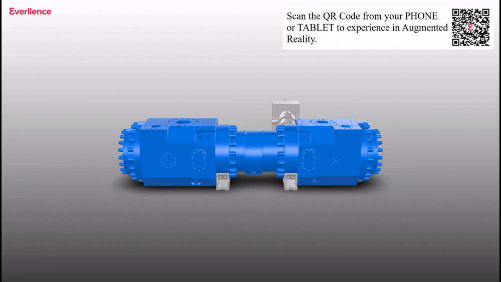

Invisible UI
The 3D model is the hero. Controls should fade away when not in active use to maximize the AR canvas.
The Vision: Overcoming the Empty Pedestal
Physical 3D printed models were occasionally removed for maintenance or relocated for special exhibitions. When this happened, visitors were left with an empty pedestal and no way to explore these incredible feats of engineering.
The opportunity was clear: we needed a digital failsafe that was just as engaging, if not more so, than the physical models themselves.
Led the project from zero: no existing solution, no template to follow.
One rule we stuck to throughout: no dedicated hardware, no app installs, just works.


This vision required a delicate balance of cutting-edge interactive technology and deeply empathetic user experience design. We needed to bridge the physical and digital worlds seamlessly, ensuring that a visitor standing in the museum could instantly summon a 1:1 scale Compressor or Engine right in front of them.
Museum Guest & Engineering Enthusiast
GOALS
+Explore complex industrial machinery up close.
+Understand how massive engines work without reading dense plaques.
FRUSTRATIONS
-Disappointed when exhibits are closed or missing.
-Refuses to download a 500MB dedicated museum app on cellular data just for a 5-minute experience.
"I just want to see the exhibit. If I have to create an account or download an app, I'm walking away."
The options explored consisted of:
- iOS & Android Museum App: this requires development time, more effort to push updates and also serves as a barrier for users with time to install the app, open and navigate a new install, local storage restrictions.
- AR Headset based experience: the number of headsets that can be available is a bottleneck, along with user comfort.
- Web-based-AR: This enabled faster development, deployment, quicker updates, majority of users know how to scan a QR code, no-install needed.
Two things became clear early on through market research and real-world data:
- App Resistance: 90% of museum apps are used by fewer than 3% of visitors, the install step alone kills adoption. [Nuseum] Visitors won't download dedicated software for a single trip, but nearly half of visitors already use their phone to browse information while on-site. [Museum Strategy]
- Maintenance Burdens: Museum-provided tablets proved operationally draining and costly to maintain at scale.
The pattern was hard to ignore, visitors are willing to use their phone, just not to install something for a one-off visit. The browser is where they already are. That's what pushed us toward a lightweight, WebAR solution. No install. No hardware dependency. Just a URL.
The entry point had to be something visitors already knew, the strategy focused on leveraging the widespread adoption of QR codes as a familiar interface for accessing digital content. [MuseumNext]
By delivering a robust 3D/AR experience entirely through a standard mobile browser, the project bypassed the need for app store downloads and complex onboarding. This approach ensured that the museum's content remained accessible, transforming the visitor's device into an immediate tool for exploration without technical barriers. [QR Tiger]
We defined a dual-modality approach based on device context. On desktop computers, the system would display an interactive 3D model viewer alongside a prominent QR code prompt, bridging the gap to mobile. On mobile and tablet, scanning the code would instantly activate a full AR experience.

I sketched out a minimalist control scheme focused entirely on manipulation and scale. The core interaction loop involved panning, rotating, and scaling. A critical design decision was implementing distinct scale controls: a '1:1 true scale' mode to convey the massive, awe-inspiring size of an RG Compressor, and a 'small scale' mode so users could inspect intricate details without having to physically walk around a massive virtual object.


The 3D model is the hero. Controls should fade away when not in active use to maximize the AR canvas.
Provide dual viewing modes: 1:1 scale for physical awe, and tabletop scale for detailed inspection.
Build a viewer wrapper that can accept any optimized 3D asset, ensuring the platform is future-proof for new exhibits.
During this phase, I also architected the technical foundation. By relying on lightweight open-source libraries, I ensured the viewer was modular. It wasn't just built for the ME-C engine; it was built as a scalable platform. The architecture separated the UI layer from the 3D rendering context, allowing us to easily swap out models as the museum's exhibits rotated.
Prototyping a zero-to-one AR product is as much a technical challenge as it is a design one. As I built out the first functional iterations, we immediately ran into performance bottlenecks. The raw CAD files provided by the engineering teams for the Electrolyzer and RG Compressor were massively complex, resulting in load times exceeding [INSERT METRIC: e.g., 45.0 seconds] on standard 4G connections.
I initiated a rigorous cycle of model optimization and user testing. We established a pipeline to decimate the 3D meshes, bake lighting into textures, and compress the assets without losing the critical visual fidelity that industrial models demand. We tested these optimized models weekly with actual museum visitors, observing their body language and interaction patterns.
The quantitative test results guided our iteration. We discovered that if the AR experience didn't load and anchor within [INSERT METRIC: e.g., 4.5 seconds], users would assume it was broken and close their browser. By refining the open-source viewer and implementing progressive loading, we brought the average initialization time down significantly. We also refined the AR anchoring mechanics, adding visual guides to help users find flat surfaces to place the models.
Receiving raw, high-poly CAD files from the engineering department.
Dramatically reducing the polygon count while preserving the exterior silhouette and key mechanical details.
Baking complex lighting and material properties into lightweight image textures to reduce real-time rendering load.
Converting assets into web-optimized formats to ensure rapid downloading over cellular networks.
Validating performance across a matrix of low, mid, and high-tier iOS and Android devices.
A lightweight browser based modelviewer
Running on open source libraries
Streamlined for both Android & iOS
When opened on a Computer(non-handheld devices): A 3D Model Viewer, explore the 3D Model, also shows a QR code to scan using a phone/tablet
When opened on a phone/tablet with AR capabilities: A few control buttons Start AR buttons



If you like what you see and want to work together, get in touch!
prathikp.prasad@gmail.com